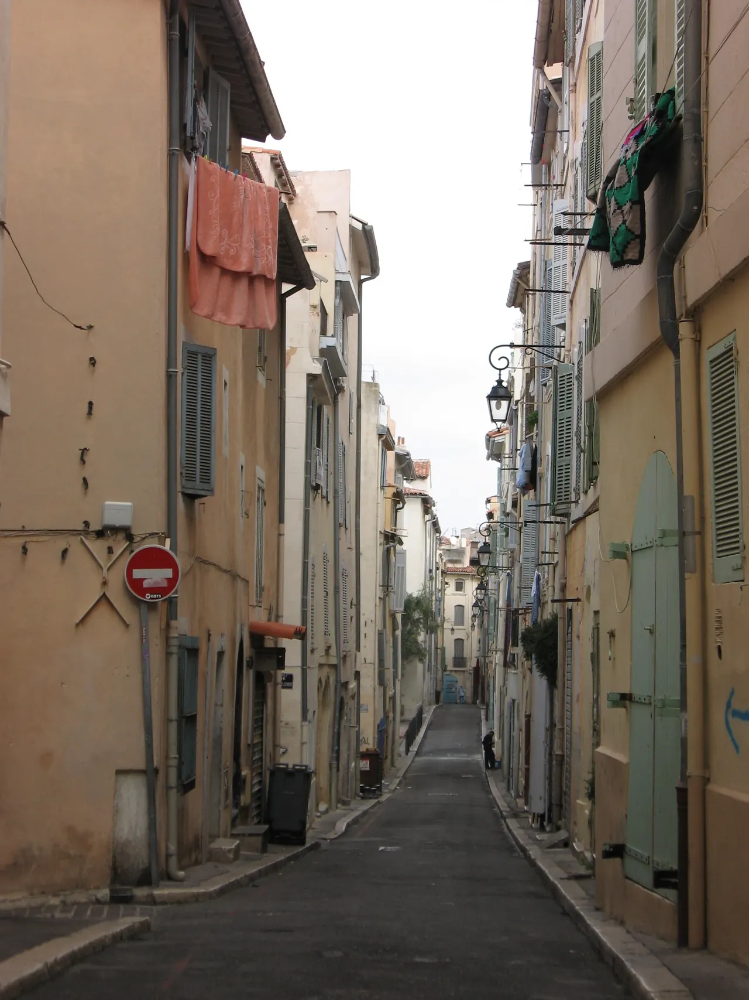

{kind=link}
관광·미술관
Nous avons déjà des billets.
이미 표가 있습니다.
누 자봉 데자 데 비예

기원전 600년 고대 그리스인들이 처음 터를 잡았던 언덕 위에 형성된 마르세유에서 가장 오랜 역사를 지닌 구시가지다.
오랫동안 이탈리아, 코르시카, 북아프리카 등 지중해 각지에서 건너온 이민자들과 부두 노동자들의 거친 보금자리였으나, 최근 아티스트 아틀리에, 세라믹 공방, 올리브 비누 상점, 감각적인 카페들이 들어서며 마르세유에서 가장 개성 넘치는 보헤미안 지구로 변모했다.
빨래가 펄럭이는 가파른 돌계단 골목과 색색의 스트리트 아트 벽화, 그리고 17세기 피에르 퓌제(Pierre Puget)가 설계한 웅장한 바로크 돔 복합체 비에이 샤리테(Centre de la Vieille Charité)가 독특한 대조를 이룬다.
"관광 기념품 상점만 스쳐 지나가지 말고, 렝슈 광장(Place de Lenche)에서 에스프레소를 마신 뒤 비에이 샤리테 중정의 바로크 돔까지 올라가는 45~60분의 골목 산책이 핵심이다." 가파른 오르막과 좁은 계단이 이어지므로 무리하게 모든 골목을 헤매지 말고 핵심 축선을 따라 걷고, 이어서 뮈셈(Mucem) 공중 보도교로 빠져나가는 동선이 가장 효율적이다.
| 운영시간 | 공식 개방시간 고지 없음 — 공공 가로. 경사·계단 많음 재확인 |
|---|---|
| 휴무 | 공개 구역 — 공식 페이지에 휴무·개방시간 고지 없음(상시 통행). 개별 상점·미술관은 별도 재확인 |
| 예약 | 예약 불필요 재확인 |
| 소요시간 | 60분 재확인 |
| 항목 | 상세 정보 |
|---|---|
| 위치 | Le Panier, 13002 Marseille |
| 운영/요금 | 마을 상시 개방 / 무료 (비에이 샤리테 중정 입장 무료, 내부 미술관 전시별 유료) |
| 도보 코스 | Quai du Port → Hôtel de Ville 뒤편 계단 → Place de Lenche → Rue du Panier → Vieille Charité (편도 약 700m) |
| 보행 주의 | 골목이 좁고 돌계단이 많아 편안한 운동화 필수. 귀중품 소지 주의 |
| Mucem 연결 | 비에이 샤리테 서쪽에서 생로랑 성당을 거쳐 Mucem/Fort Saint-Jean으로 직결되는 공중 보도교 연계 |
고대 그리스의 아고라(Agora) 터에 자리한 유서 깊은 광장으로, 과거 시민들이 모여 민주정을 논하던 중심지였다. 광장 서쪽 테라스에서 항구 입구와 생장 요새가 내려다보이며, 노천 카페와 로컬 비스트로가 밀집해 있다.
Nous avons déjà des billets.
이미 표가 있습니다.
누 자봉 데자 데 비예
On peut prendre des photos ?
사진 찍어도 되나요?
옹 푀 프랑드르 데 포토
Où commence la visite ?
관람은 어디서 시작하나요?
우 코망스 라 비지트

폴 세잔이 생의 마지막 4년(1902–1906) 동안 매일 그림을 그렸던 언덕 위 아틀리에. 북향 채광창, 대형 캔버스용 벽 슬릿, 정물화에 등장했던 올리브 단지와 해골이 그대로 보존된 근대 미술의 성지.

폴 세잔이 20세부터 60세까지 40년간 머물며 화가로 성장했던 가문의 여름 저택. 살롱의 초기 벽화, 마로니에 가로수길, 분수 연못, 그리고 화가가 최초로 생트 빅투아르 산을 그렸던 역사적 현장.

마르세유와 카시스 사이에 걸쳐 20km에 걸쳐 펼쳐진 유럽 유일의 지중해 연안 국립공원. 에메랄드빛 바다로 수직 낙하하는 백색 석회암 피오르 협만들의 장관.

엑상프로방스 건축물의 황금빛 사암을 공급하던 고대·중세 채석장. 직각으로 깎인 붉은 사암 절벽과 소나무 숲 사이에서 세잔이 큐비즘의 기하학적 구도를 태동시켰던 야외 작업장.

유럽 최고 높이의 해안 절벽 캅 카나유(Cap Canaille) 아래 자리한 아늑한 지중해 어항. 파스텔톤 가옥, 칼랑크 국립공원 유람선 출발지, 유서 깊은 카시스 화이트 와인(AOC Cassis)의 고향.

1651년 옛 성벽 자리에 조성된 440m의 플라타너스 가로수길. 북쪽의 활기찬 카페와 남쪽의 고요한 17세기 귀족 저택, 4개의 유서 깊은 분수가 관통하는 엑상프로방스의 심장.